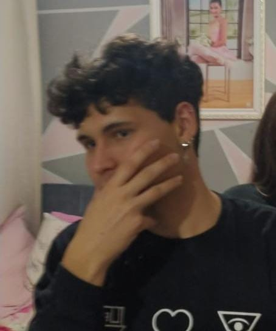

Uma página de fã para fã
Esta página foi originalmente concebida para atender às exigências do segundo trabalho da disciplina de Desenvolvimento Web no 6º período do curso de Ciência da Computação. Contudo, à medida que o projeto tomava forma, tornou-se evidente a oportunidade de transformá-lo em um portfólio robusto. Aqui, além de cumprir requisitos acadêmicos, pudemos aplicar e consolidar diversos conhecimentos cruciais para o Desenvolvimento Web, utilizando HTML, CSS e JavaScript de maneira integrada e eficaz. Cada linha de código representa não apenas a entrega de um trabalho, mas um marco na nossa jornada acadêmica e profissional. Esta página transcende a mera funcionalidade acadêmica, tornando-se uma expressão tangível do meu comprometimento em aprimorar habilidades e oferecer soluções inovadoras. Convido você a explorar este portfólio, onde códigos não são apenas escritos, mas onde histórias são criadas e desafios são superados, refletindo meu compromisso com a excelência e paixão pelo desenvolvimento web.
Sobre os autores:
Lucas Martins
Hallo, wie geht es dir? Ich bin Lucas, einer der Ersteller dieser Website.
Hey! Ich bin ein 25-jähriger Entdecker der Informatik. Mit einer Tastatur und endlosem Kaffee bin ich auf einer Mission, die Geheimnisse der digitalen Welt zu entschlüsseln. In der Wissenschaft entschlüssele ich die Feinheiten der Informatik und sauge Wissen wie ein Schwamm auf. Jenseits von Algorithmen genieße ich das Zeichnen, Sport und das altmodische Schreiben. Meine Liebe zum Geschichtenerzählen übertrage ich auf die Gestaltung digitaler Erlebnisse und lasse mich dabei von epischen Fantasiewelten und Filmuniversen inspirieren. Wenn du nach einem Codekrieger suchst, um eine Online-Präsenz aufzubauen oder Physik und Superheldenfilme zu besprechen, bin ich hier. Lass uns Websites erschaffen, so groß wie architektonische Wunder und Code so elegant wie High-Tech-Gadgets. Prost auf Coding-Abenteuer und technische Triumphe!
Nicolas Caçador

Ciao! Mi chiamo Nicolas, piacere, come va? sono o aiutante e amico da Lucas.
Sono solo un giovane brasiliano intenditore dei gruppi rock. Ho 21 anni, adoro leggere libri filosofici e bere caffè doppio, ho una preferenza per Dostoievski e Camus, ma mi piace anche leggere Kafka, Nietzsche, tra gli altri. Mi piace imparare per divertimento, però sono un po' pigro. Oltre ad apprezzare il rock, ascolto molti altri stili musicali, mi piache el pallavolo, per me è routine giocare ogni sabato, amo mangiare alimenti di dubbia provenienza e bere alcolici bevande, io odio luoghi affollati e molte persone vicino a me.